Technical Marketing MS5 Vignettes - VGx Variational Sweep
These VGx examples show how VGx enables the variational sweep (Vsweep)
to create conmplex shapes with out the user having to do all the work.
Model file :- VGx_vignettes.mf*
Begin vignette
Before

After


Get the Vsweep edge participation part to the workbench.

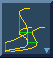
Pick the top magenta surface.
Pick close to the end of the edge to define a direction for the sweep.
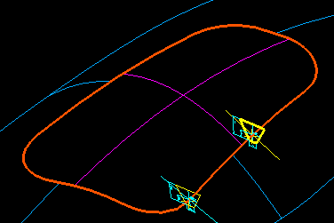
Pick the yellow section as the cross section.
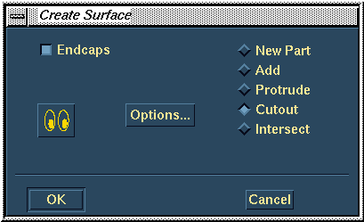 
Cut from the part.
Begin vignette
Before
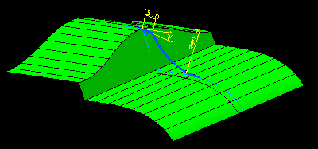
After


Get the Vsweep edge/surface participation part to the workbench.
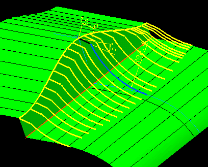 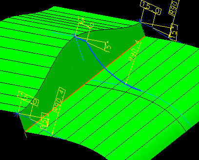
Pick the straight edge for the Vsweep path.
Pick the blue section for the cross section.
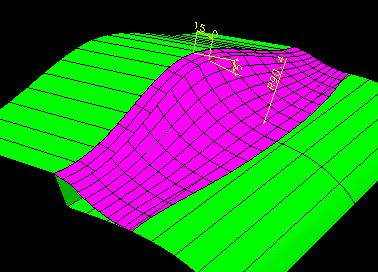
Add the Vsweep to the part.
Begin vignette
Before
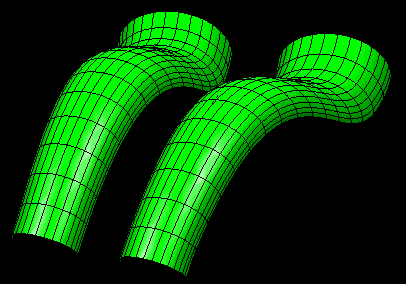
After
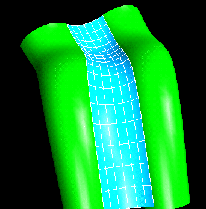
Get the Vsweep fillet btwn surfaces part to the workbench.
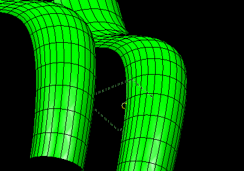
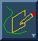
Pick edge E8 for the path.


Use the Arc Three Points On icon and Intersect (RMB) the two surfaces.


View the workplane.
Add an arc approx radius 60mm.


Constrain the arc ends to be on the intersection splines.
Ensure the arc is tangent to the intersection splines.
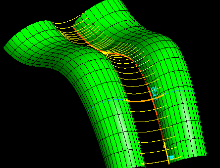 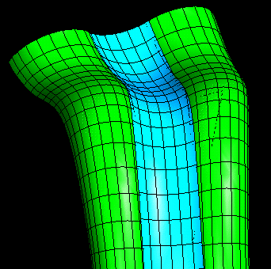
Vsweep the arc using edge E8 as the sweep path.
Add the Vsweep to the part.
Tech Tips
.